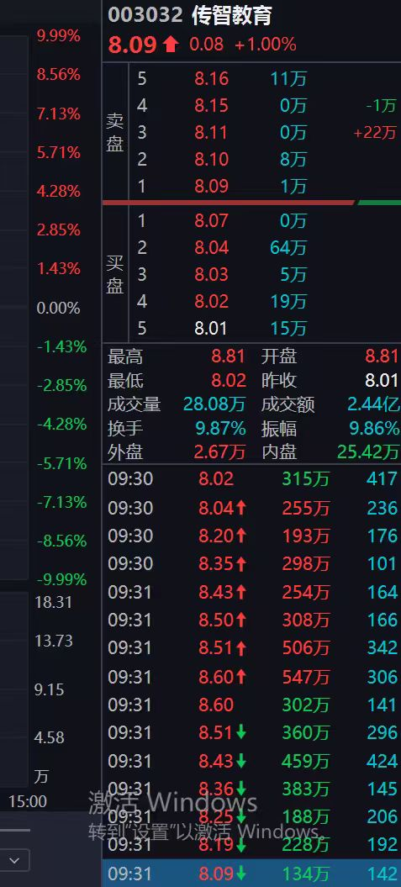
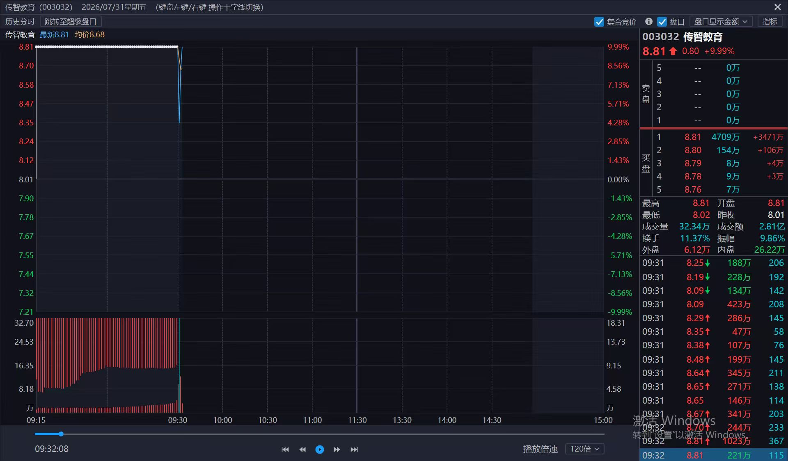
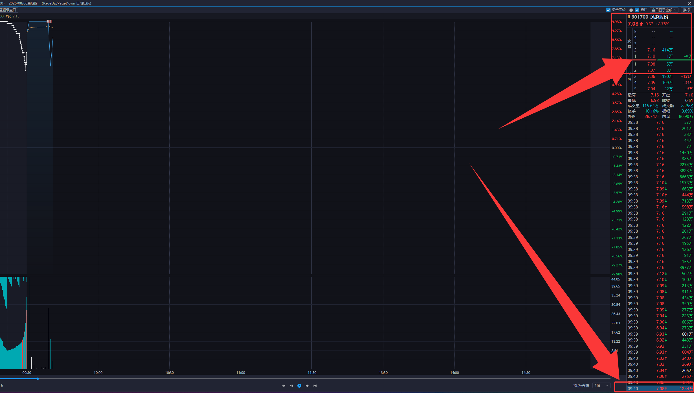

003032 Missed Leader Case
传智教育：错过 8 板龙头周期
这不是简单的“没买到”，而是盘前没有在 4 板前把它放进龙头候选池，盘中 5 板爆量弱转强回封时又慢了一两秒。真正的错过点，是没有在“量能释放到位、低点不破、跳空大单回拉、上方压单很薄”的瞬间提前板上打单。
一句话定性
错过的本质
4 板没有提前识别，5 板回风没有提前打。传智教育在 7 月 30 日已经完成一字后的首次爆量分歧转一致，7 月 31 日又在唯一高标竞争中用更强竞价、更快回封和更强带动性胜出。真正该做的是 4 板先手建仓，5 板回风确认再加仓。
最该记住的动作
分歧往下杀后，先盯第一次最低点。只要后续跳单回拉不破最低点，上方压单又很薄，下面成交大单连续往上吃，就要把涨停价买单准备好，在快封板的一瞬间打进去，而不是等封单堆到 8000 万、1 亿后再排。
盘口转折：大单压单、跳空回拉与回风板
分歧低点 8.02
回拉序列 8.04 -> 8.60
回封节点 09:32 附近
回封确认 千万级扫单




回风板下单触发器
当天量能接近或超过前面连板最高量，或者达到低量板的 1.5-2 倍以上，说明分歧释放已经足够。
第一次下杀低点是风控线。传智教育是 8.02，只要后续脉冲回落不破 8.02，就不是溃败。
成交明细出现连续跳空回拉单，百万级到千万级资金连续扫入，说明资金在主动维护成本区。
卖盘不是几千万、上亿压着，而是只有几百万压单；下方成交大单明显大于上方压单。
离涨停板很近时，卖五档快速被吃掉，甚至只剩最后一层薄压单，这是回封前最重要的一瞬。
不是封住再点，而是单先挂涨停价，快封那一刻直接打。慢一两秒就容易打不进去。
为什么 5 板应当锁定传智教育
周期背景
上一周期高标龙头爆量断板后，旧周期进入结束或退潮，新的核心容易在这个节点卡出来。传智教育 7 月 28 日二板附近已经展示主动性、带动性和抗跌性，后排有苏州科达、学大教育等跟随，题材偏 AI 应用并夹杂机器人。
5 板定龙
7 月 31 日它高预期开一字，但量能和小弟助攻都不足，所以需要开板爆量释放分歧。回封后普联软件、泛微网络等在较短时间内跟随上板，说明它从候选龙头变成市场总龙。
| 候选 | 优势 | 问题 | 结论 |
|---|---|---|---|
| 传智教育 | 竞价更强、回封更快、AI 应用题材更有容量，5 板后带动后排上板。 | 盘子偏小，一旦封单堆大很难买到。 | 最优选择，4 板先手、5 板回风加仓。 |
| 一鸣食品 | 1-3 板有带动性，大消费内部也有辨识度。 | 题材容量弱于 AI 应用，次日带动后排数量不足。 | 可做候选，但不是市场总龙。 |
| 明新旭腾 | 有主动性，机器人方向有一定辨识度。 | 4 板未充分爆量，带动性弱，后排上板时间间隔偏久。 | PK 中被传智教育筛掉。 |
3-5 板先手建仓规则
盘前筛 2-3 个
所有 3 板及以上、有题材效应的票，都要做龙头气味分析：主动性、带动性、领涨性、唯一性、抗跌性、市场性和题材容量。
不唯一就分散
没有确认唯一性时，单票初期建仓不超过 3-4 成。当时一鸣食品和传智教育都可各给 4 成，总仓位约 8 成。
确认唯一再集中
谁在次日真正走出来，谁再右侧加仓到 7-8 成。只有唯一高标、唯一主线、唯一市场总龙确认后，才允许重仓集中。
情绪与赚钱效应判定
赚钱效应
看当日涨停股次日反馈。如果涨停股次日普遍有溢价、没有明显负反馈，说明市场有赚钱效应，可以提高对核心龙头的参与积极性。
亏钱效应
如果涨停股次日两极分化，低开、核按钮、炸板、冲高回落严重，说明市场有亏钱效应，回风板需要更严格地看量能、低点和题材带动。
最终沉淀
传智教育这一波最大的教训是：三板以后必须盘前做龙头候选池，四板爆量弱转强要敢先手，五板回风确认要提前准备。核心口诀就是：唯一高标 + 题材支撑 + 爆量超过前高 + 低点不破 + 跳空大单回拉 + 上方压单很薄 = 快封板前直接打。